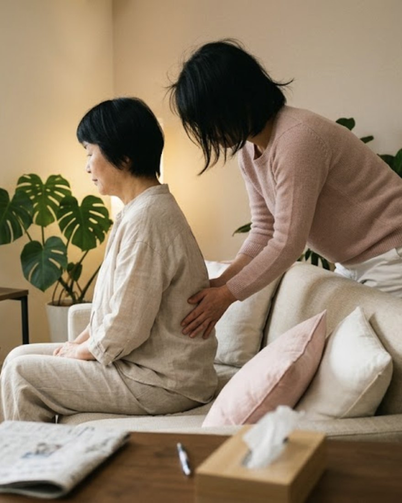

Now Accepting受講生 受付中
Now Accepting受講生 受付中
資格がなくても、お店がなくても。
自分の手で、大切な人を整える。
福井市大宮の小さなサロンで、少人数・実技中心で行っています
FEMOON SCHOOLフェムケア矯正 講習
少人数制
実技中心
実技中心
現役の
施術者が
直接
施術者が
直接
店が
なくても
OK
なくても
OK
※写真はイメージです
Now Accepting受講生 受付中
資格がなくても、お店がなくても。
福井市大宮の小さなサロンで、少人数・実技中心で行っています
※写真はイメージです
むずかしいことはしません。
やることは、大きく分けてこの3つだけです。
 1
1
立ち方と座り方を見て、体が左右のどちらに傾いているかを確かめます。服を脱いだり、着替えたりはしません。
 2
2
お洋服の上から、骨盤と骨格に手をあてます。強く押したり、ひねったりはしません。デリケートゾーンに直接触れることもありません。
 3
3
おうちでの座り方と呼吸を伝えます。毎日何十分もかかるトレーニングは使いません。

おへその下、脚の付け根のあたりにある、うつわのような形の骨です。上半身と下半身をつなぐ土台なので、ここが左右に傾くと、立ち方も座り方も少しずつずれていきます。
フェムケア矯正は、この土台に手をあてて整えていく施術です。講習では、この骨盤のどこに、どの向きで手をあてるのかを、実際に手を動かしながら覚えます。

学んだその日から家のなかで使えます受けている方の理由資格でも、開業でもなく。まず目の前のひとりを楽にしてあげたい。
腰や肩がつらそうで、何かしてあげたい
受けてよかったので、人にもしてあげたい
お店は持っていないけれど、技術を身につけたい
いまのメニューに、もうひとつ足したい
無理のない範囲で、何かしてあげたい
いずれ仕事にしたいけれど、まだ決めきれない
受講にあたって、資格や実務経験は必要ありません。いま何もしていない方が、いちばん多く受けられています。

家族や友人に、してあげるために。
受けている方の多くは、お店を持っていません。
開業していることは、受講の条件ではありません。
できるようになることを大きく見せるより、
どこまでを扱う技術なのかを先にお伝えします。
骨盤と骨格にお洋服の上から手をあてる手順力の向き、置く位置、待つ時間まで実技で
強い力で押す、ひねるといった刺激の強い手技
立ち方・座り方から左右差を見るところまで相手の状態をことばにして伝えられるように
病名をつける、診断する、治療する行為
相手が言いやすくなる聞き方家族ほど言いにくい話をどう受けるか
効果を約束する言い方、不安をあおる売り方
手を出してはいけない場面の見分け方妊娠中、けが、痛みが強いときの断り方
どんな相手にも同じ手順をあてること
相手に渡すおうちでのケア座り方と呼吸。むずかしい運動は使いません
毎日何十分もかかるトレーニングの指導
受けると決める前で大丈夫です。内容と日程だけ聞いてください。
サロンの営業日に合わせて、ご都合のつく日を相談して決めます。
完全個室で少人数。実技の時間を多く取ります。見学だけの時間はつくりません。
やってみて分からなくなったところは、LINEでそのまま質問できます。

教えるのは、毎日この部屋で施術している人です。
教室専門の講師ではありません。
今日もお客さまに手をあてている人間が、そのまま同じことをお伝えします。
金額は受講前にすべてお伝えします。
あとから追加で必要になる費用はありません。
受講後にサロンを開く・開かないは自由です。
収入や集客を約束するものではありません。
 いちばん伝えたいこと
いちばん伝えたいこと
開業していること、資格を持っていることは、受講の条件ではありません。
家族や友人にしてあげたい、という理由だけで受けていただけます。

福井市大宮のフェムケアサロン FEMOON を、女性ひとりで営んでいます。完全個室・完全予約制で、骨盤ケア・脱毛・育毛を扱っています。講習でお伝えするのは、今日もお客さまに使っている手順そのものです。
保有資格・経歴：〔要確認〕
受けられます。実務経験や資格は条件にしていません。何もしていない状態から受けられる方が多いです。
あります。家族や友人にしてあげるために受ける方のほうが多いです。開業は条件でも目的でもありません。
〔要確認〕（協会の認定制度と、名称を使える範囲を確認してから記載します）
〔要確認〕（フェムケア矯正はサロンでは女性専用のメニューです。講習の受講条件は確認のうえ記載します）
〔要確認〕（所要時間と回数が決まり次第、ここに記載します）
〔要確認〕（キャンセル・返金の扱いを確認のうえ記載します）
大丈夫です。ただ、一度お客さまとして受けていただくと、手の当たり方が分かるぶん講習が早く進みます。
動きやすい服装でお越しください。実技はお洋服の上から行うので、着替えは必要ありません。
受けると決める前に、内容と日程だけ聞いていただいて構いません。
LINEでのご相談にお名前は必要なく、受講をおすすめするメッセージも送りません。
LINE公式アカウント @femoon